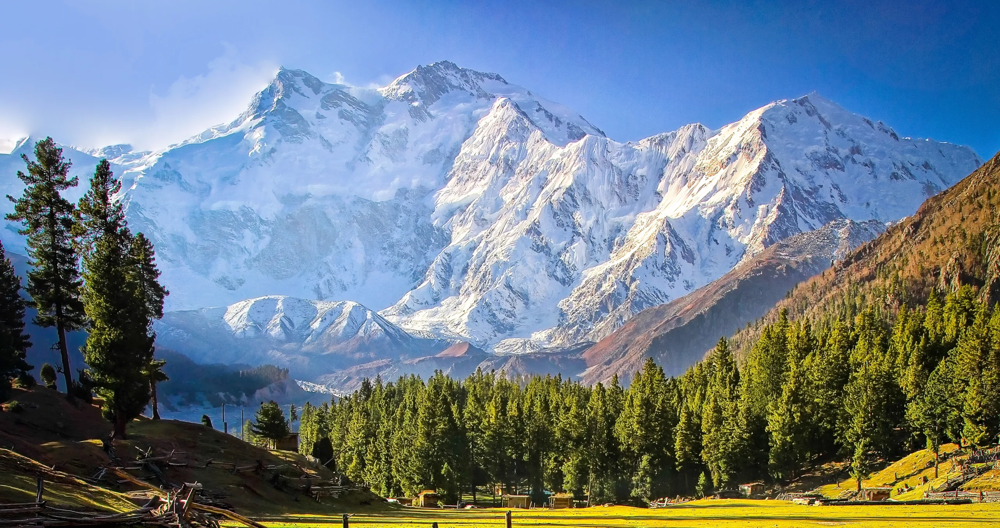

El Nanga Parbat es un mito que forja leyendas. En sus laderas se escribieron las gestas más grandes del alpinismo: desde la ascensión agónica de Hermann Buhl hasta la epopeya de los hermanos Messner. Hoy, la 'Montaña Asesina' sigue desafiando a quienes buscan lo imposible. Atrévete a recorrer sus huellas y descubre el corazón del Karakórum con nosotros.

Lo que hace al Nanga Parbat particularmente temible son sus colosales paredes. Desde el campo base de la vertiente Rupal, por ejemplo, los escaladores se enfrentan a un desnivel de casi 4.600 metros hasta la cima, una de las mayores diferencias de altura en el mundo entre una base y una cumbre, exigiendo una resistencia y aclimatación extraordinarias.

El Nanga Parbat, conocido como la "Montaña Desnuda", ha desafiado a los alpinistas por décadas. Su primera ascensión exitosa se logró en solitario el 3 de julio de 1953 por el austriaco Hermann Buhl, en una hazaña épica que marcó un hito en la historia del montañismo de altura.

Durante mucho tiempo, el Nanga Parbat fue uno de los últimos ochomiles sin ascensión invernal. Esta proeza fue finalmente lograda el 26 de febrero de 2016 por el equipo formado por Simone Moro, Alex Txikon y Ali Sadpara, tras incontables intentos fallidos de otros expedicionarios, demostrando una resiliencia y determinación sobrehumanas frente a las condiciones más extremas.

El Nanga Parbat se ha ganado el apodo de "Killer Mountain" debido a la trágica historia de vidas que ha cobrado. Antes de la exitosa ascensión de Buhl, más de 30 alpinistas perdieron la vida en sus laderas, convirtiéndola en una de las montañas más mortíferas. Este pasado añade una capa de respeto y precaución a cada expedición que se atreve a desafiarla.